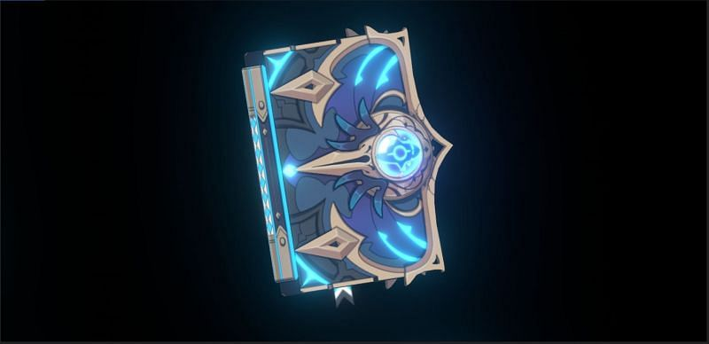

Gnshin Impact é um jogo de mundo aberto, em que o jogador precisa se aventurar e concluir missões para encontrar sua(seu) irmã(ão) que foi aprisionado por uma deusa desconhecida
Em sua aventura você tera que ajudar varias nações e coletar informações para achar sua(seu) irmã(ão)
Cada uma das nações representa um elemento, tal como as nações, existem 7 elementos em genshin, eles são: electro, hydro, pyro, cryo, dendro, geo e anemo
Os elementos do jogo tem reações uns com os outros tendo como as principalmente usadas sendo a vaporização(hydro+pyro); florescimento (hydro+dendro); e eltricamente carregado(electro+hydro).
Cada um dos elementos é representado por um deus, denominados Arcontes eles são seres de pura energia elemental que venceram a guerra de Khaenri`ah ha cerca de 500 anos atras (na linha temporal do jogo) reenvindicando seu territorio apos lutas que mudaram a geografia do mundo.
Gensin é principalmente baseado em um estilo de RPG, tendo no total 6 classes de personagem e tambem 5 tipos de arma que podem ser usadas, considerando a grande qauntidade de personagens jogaveis (54) é uma baixa quantidade de armas, entretanto a diversidade do uso dos poderes elementais dos personagens comunmente os torna unicos naquilo que fazem
Entre as armas presntes no jogo temos:
EspadãoÉ basicamente uma espada comum, porem com o triplo do tamnho, normalmente é apenas usada por usuarios de visãomas também pode ser empunhada por pessoas com muita força.
Catalisador
É um instrumente que consegue canalisar e então direcionar a energia elemental, so pode exclusivamente ser usado por portadores de uma visão, porem como em sua maioria são livros, muitos deles estão recheados de segredos e histórias
EspadaEspadas, são... espadas, nada muito incomum, elas aparecem em variedade de katana e espada comum (dois gumes)